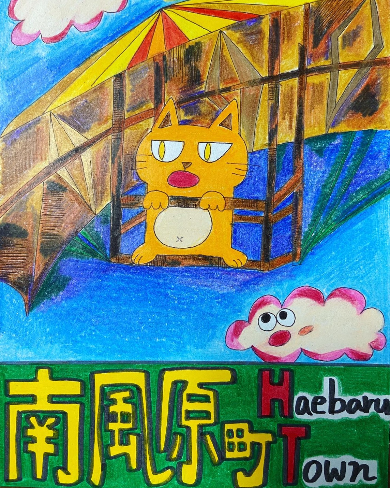
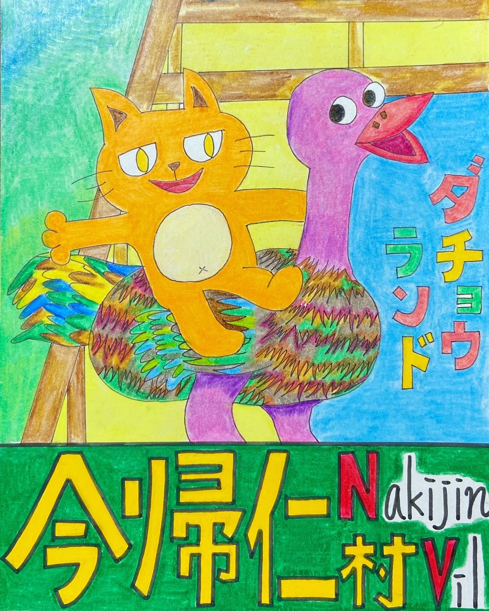
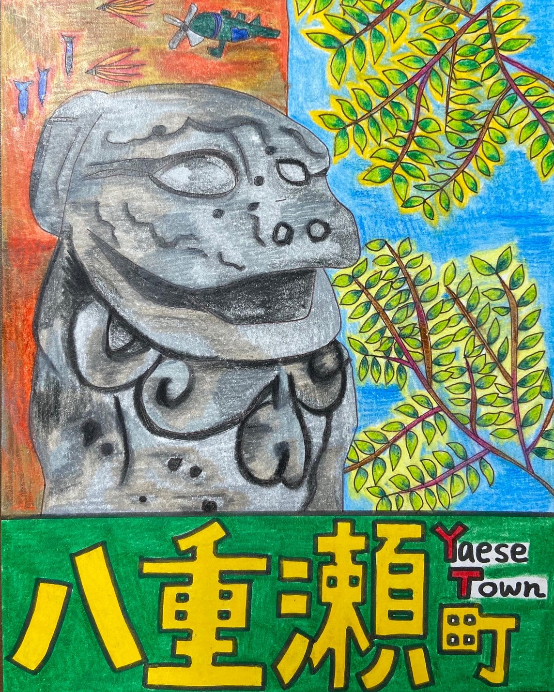

- GalleryTOP
- シリーズで見る
- 高速道路チャレンジ
- 市町村コンプリート編
- 絵本シリーズ
- NEW 離島チャレンジ
- HOMEへ
市町村コンプリート編
市町村コンプリート編とは、高速道路チャレンジの派生から生まれた作品集。沖縄県の高速道路シリーズ以外の市町村はまだたくさんある！ここでは高速道路チャレンジでは紹介していなかった沖縄の市町村を完全網羅します。沖縄本島の南から国頭の北部までそれぞれ魅力的な特徴がある。そして、沖縄の市町村は難しい読み方がたくさん！？？沖縄の人は読めるけど…
みなさんは読めますか？？さあ、沖縄の市町村を全部一緒に見ていこう！！✨

①南風原町（はえばる）
⑦国頭村（くにがみ）
③南城市（なんじょう）
④北谷町（ちゃたん）

⑤今帰仁村（なきじん）
⑥本部町（もとぶ）
⑦恩納村（おんな）
⑧東村（ひがし）

⑨八重瀬町（やえせ）
どうでしたかー？？
沖縄本島の市町村はこんなにたくさんある！そして、それぞれがそれぞれの魅力が詰まっています！作品を見ていく中で、「なんだろう、これ」というようなものはぜひ調べてみてください。そして、まだ沖縄本島以外に離島があるのだ！別シリーズ「離島チャレンジ」へとつながっていくのでお楽しみに(+o+)//